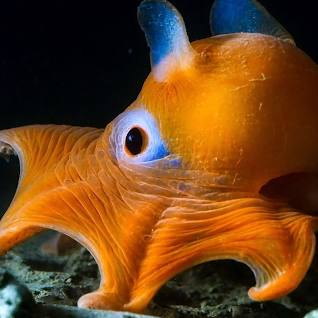
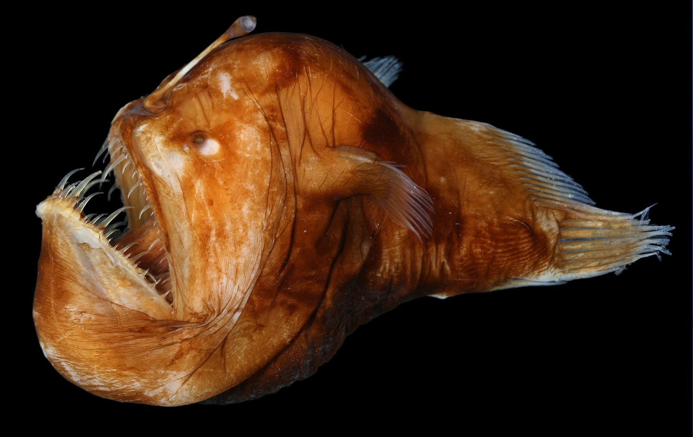
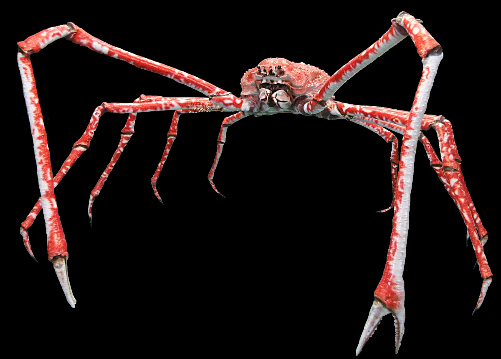

Dumbo Octopus
The Dumbo octopus is named after the famous Disney character "Dumbo" because of its ear-like fins. These fins help it to swim gracefully in the deep ocean, resembling the flying elephant's large ears...

Angler Fish
In some species of anglerfish, the females have a unique way of attracting prey. They have a bioluminescent lure on their head that glows in the dark, resembling a small fish or worm. When other fish approach the light, they become the anglerfish's unsuspecting prey...

Japanese Spider Crab
The Japanese spider crab has the longest leg span of any arthropod, reaching up to 12 feet (3.7 meters). They are known to inhabit the waters around Japan and are a remarkable sight due to their enormous size...